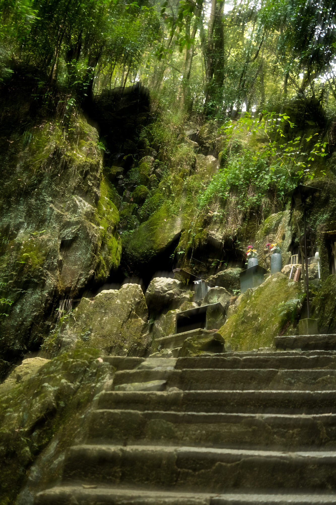
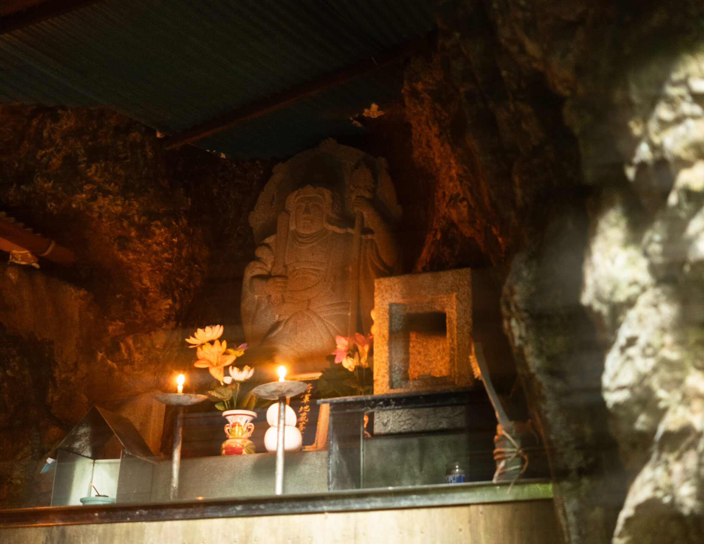
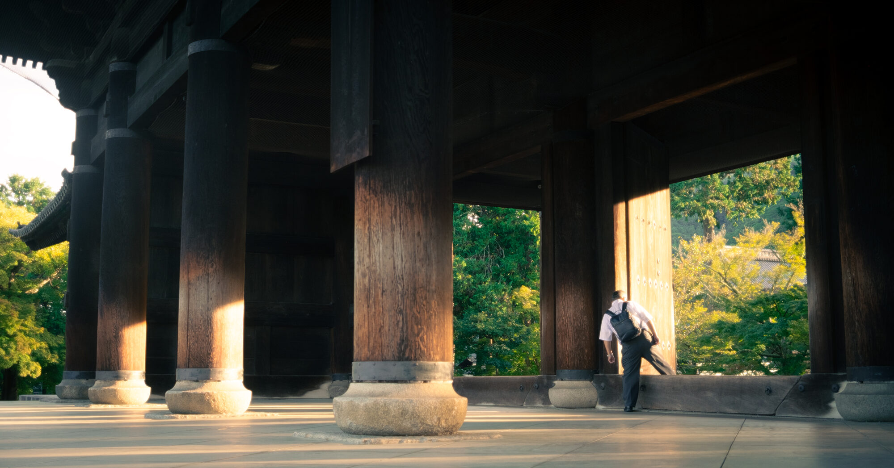

Kyoto, Fall 2025
In town for a wedding, I had a morning to spend in Kyoto. I woke up early and went to a Buddhist temple called Nanzen-ji. In the pathways behind the temple, I passed by a few monks who were praying at and maintaining these altars.


